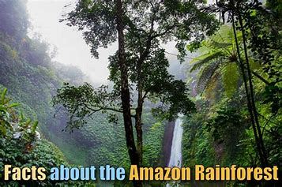
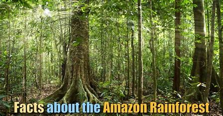

Amazon Rainforest, large tropical rainforest occupying the drainage basin of the Amazon River and its tributaries in northern South America and covering an area of 2,300,000 square miles (6,000,000 square km). Comprising about 40 percent of Brazil’s total area, it is bounded by the Guiana Highlands to the north, the Andes Mountains to the west, the Brazilian central plateau to the south, and the Atlantic Ocean to the east.A brief treatment of the Amazon Rainforest follows. For full treatment, see South America: Amazon River basin.Amazonia is the largest river basin in the world, and its forest stretches from the Atlantic Ocean in the east to the tree line of the Andes in the west. The forest widens from a 200-mile (320-km) front along the Atlantic to a belt 1,200 miles (1,900 km) wide where the lowlands meet the Andean foothills. The immense extent and great continuity of this rainforest is a reflection of the high rainfall, high humidity, and monotonously high temperatures that prevail in the region.The Amazon Rainforest is the world’s richest and most-varied biological reservoir, containing several million species of insects, plants, birds, and other forms of life, many still unrecorded by science. The luxuriant vegetation encompasses a wide variety of trees, including many species of myrtle, laurel, palm, and acacia, as well as rosewood, Brazil nut, and rubber tree. Excellent timber is furnished by the mahogany and the Amazonian cedar. Major wildlife includes jaguar, manatee, tapir, red deer, capybara and many other types of rodents, and several types of monkeys.Learn how the Brazilian government incentivized forest clearing in the Amazon for beef production and ranching Learn how the Brazilian governmen incentivized forest clearing in the Amazon for beef production and ranchingDeforestation of the Amazon River basin has followed a pattern of cutting, burning, farming, and grazing. This process is then repeated on adjacent plots of land, steadily pushing back the borders of the Amazon Rainforest.See all videos for this articleBehold the multitude of Amazonian arthropods including spiders, scorpions, beetles, and mantidsBehold the multitude of Amazonian arthropods including spiders, scorpions, beetles, and mantidsAmong the arthropods of the Amazon Rainforest are spiders (including orb weavers and tarantulas), scorpions, centipedes, millipedes, butterflies, wasps, rhinoceros beetles, ponerine ants, mantids, and walkingsticks.See all videos for this article In the 20th century, Brazil’s rapidly growing population settled major areas of the Amazon Rainforest. The size of the Amazon forest shrank dramatically as a result of settlers’ clearance of the land to obtain lumber and to create grazing pastures and farmland. Brazil holds approximately 60 percent of the Amazon basin within its borders, and some 1,583,000 square miles (4,100,000 square km) of this was covered by forests in 1970.The amount of forest cover declined to some 1,283,000 square miles (3,323,000 square km) by 2016, about 81 percent of the area that had been covered by forests in 1970. In the 1990s the Brazilian government and various international bodies began efforts to protect parts of the forest from human encroachment, exploitation, deforestation, and other forms of destruction. Although Brazil’s Amazon continues to lose forest cover, the pace of this loss declined from roughly 0.4 percent per year during the 1980s and ’90s to roughly 0.1–0.2 percent per year between 2008 and 2016. However, some 75,000 fires occurred in the Brazilian Amazon during the first half of 2019 (an increase of 85 percent over 2018), largely due to encouragement from Brazilian Pres. Jair Bolsonaro, a strong proponent of tree clearing.In 2007 Ecuador initiated a unique plan to preserve a portion of the forest within its borders, which lies in Yasuní National Park (established 1979), one of the world’s most biodiverse regions: the Ecuadoran government agreed to forgo development of heavy oil deposits (worth an estimated $7.2 billion) beneath the Yasuní rainforest if other countries and private donors contributed half of the deposits’ value to a UN-administered trust fund for Ecuador. In 2013, however, Ecuador abandoned the plan, after only $6.5 million had been raised by the end of 2012. By 2016 the state oil company Petroecuador had begun to drill and extract petroleum from the park.

